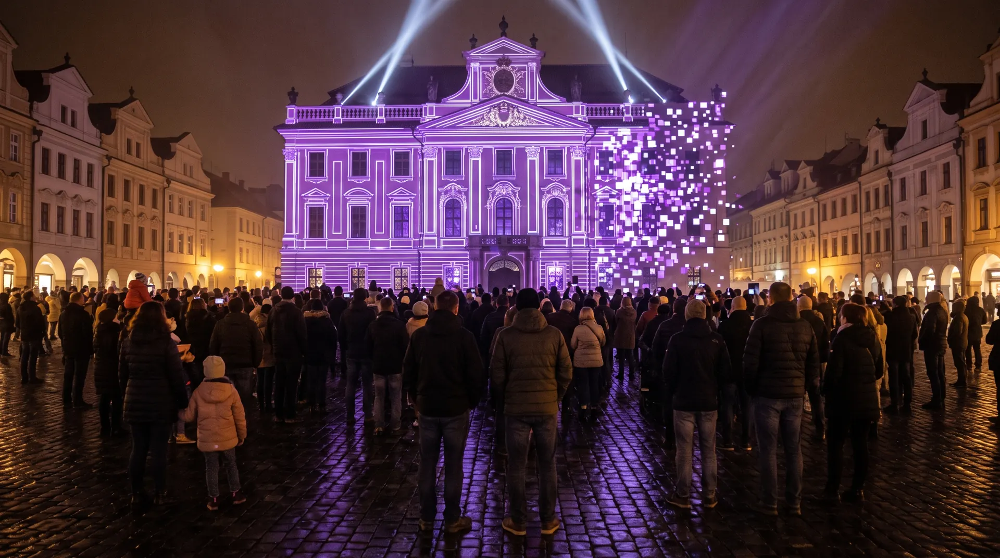
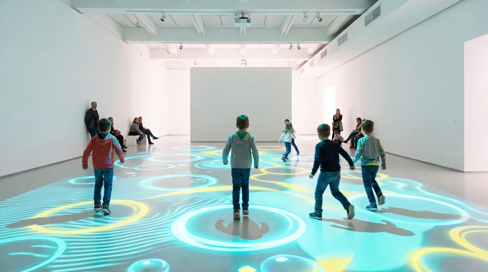

Hlubina
Imerzivní projekce · výstavní hala
Studio zážitků · Liberec
Výstavy, světlo a interaktivní prostory
Novinky
Dílna v Liberci je otevřená pro školy. Ukážeme, jak se staví světlo.
Nový projekt Síť: paprsky v mlze v bývalé kotelně.
Hledáme technika pro světlo a zvuk.
Imerzivní projekce · výstavní hala
01 / 06
Chci podobný projektStudio
Výstavy, světlo a interakce. Od nápadu po poslední kabel, všechno ve vlastní dílně v Liberci.
01 · Výstavy
Projekce přes stěny i podlahu, zvuk do prostoru. Pro galerie, muzea a haly.
02 · Světlo
Venkovní objekty pro festivaly a města. Vydrží déšť i mráz a zapnou se samy.
03 · Interakce
Podlahy a stěny, které poznají krok i dotek. Pro děti, veletrhy a firemní akce.
Vize
Každý projekt nejdřív postavíme v dílně ve skutečné velikosti. Až když funguje tam, stavíme ho u Vás.

Pro města a festivaly
Projekce na fasády, svítící objekty na náměstí a advent, který lidi vytáhne ven. Navrhneme, postavíme, zapojíme a v zimě se o to postaráme.
Povolení, elektřinu i pojištění vyřizujeme s Vámi.

Pro galerie a firmy
Podlahy, stěny a stoly, které poznají krok, dotek i hlas. Pro dětské části galerií, muzea, veletržní stánky a firemní akce.
Půjčíme i na jeden víkend, včetně obsluhy.
Máte prostor, který má ožít? Pošlete nám pár fotek a rozměry. Do týdne se ozveme s nápadem a odhadem ceny.
▲ zvukTahle stránka umí zvuk. Zapnout?